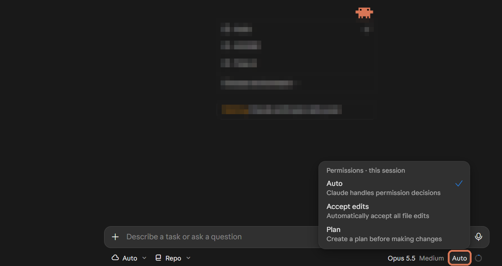

הרשאות: כמה Claude עושה לבד
לפני כל פעולה Claude יכול לשאול אתכם, או פשוט לעשות. כאן קובעים את זה.
- 1Auto: מחליט לבדעושה את רוב הדברים לבד, ושואל רק כשמשהו חשוב
- 2Accept edits: עורך בלי לשאולמשנה קבצים בלי לבקש אישור כל פעם
- 3Plan: קודם תוכניתמספר מה הוא מתכנן, ובונה רק אחרי שאישרתם
- 4מה אנחנו בוחריםAuto. כשרוצים לראות קודם מה הוא יעשה, Plan
- 1
איפה מחליפים
לוחצים על Auto למטה, ובוחרים מהרשימה.

אפשר להחליף בכל רגע